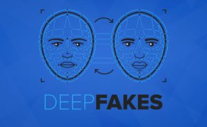

📰 Fake News
Informação e responsabilidade
Notícias falsas podem ser criadas para provocar medo, influenciar opiniões ou simplesmente conseguir mais visualizações e compartilhamentos.
Nem tudo que você vê na internet é o que parece.
Aprenda a identificar manipulações, desinformação e conteúdos criados para enganar.
Manipulação digital é o uso de ferramentas e tecnologias para alterar, criar ou modificar conteúdos digitais. Imagens, vídeos, áudios e textos podem ser modificados para transmitir uma informação falsa ou distorcida.
Informação e responsabilidade
Notícias falsas podem ser criadas para provocar medo, influenciar opiniões ou simplesmente conseguir mais visualizações e compartilhamentos.

Quando a tecnologia imita a realidade
Deepfakes utilizam inteligência artificial para criar ou modificar vídeos, imagens e áudios, fazendo uma pessoa parecer dizer ou fazer algo que nunca aconteceu.
Nem toda imagem é uma prova
Fotografias podem ser editadas, recortadas ou combinadas com outros elementos. Por isso, é importante investigar a origem de uma imagem antes de acreditar nela.

Pense antes de compartilhar
Algoritmos podem mostrar conteúdos semelhantes aos que você já consome. Isso pode criar uma visão limitada da realidade e facilitar a propagação de informações falsas.
Uma imagem viral aparece nas redes sociais dizendo: "Especialistas confirmam que essa tecnologia será obrigatória amanhã". O post não apresenta fonte ou link para a pesquisa.
O que você faria?